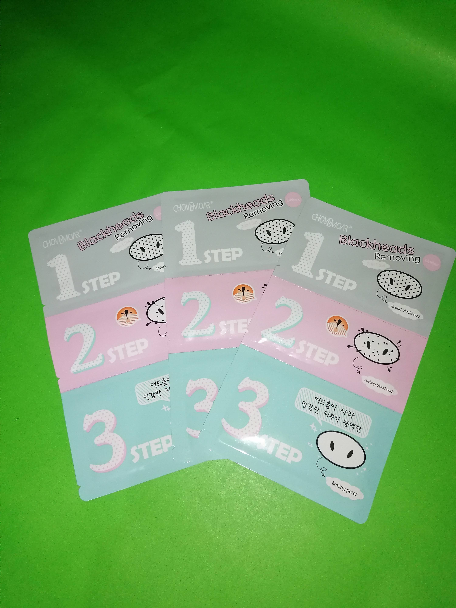
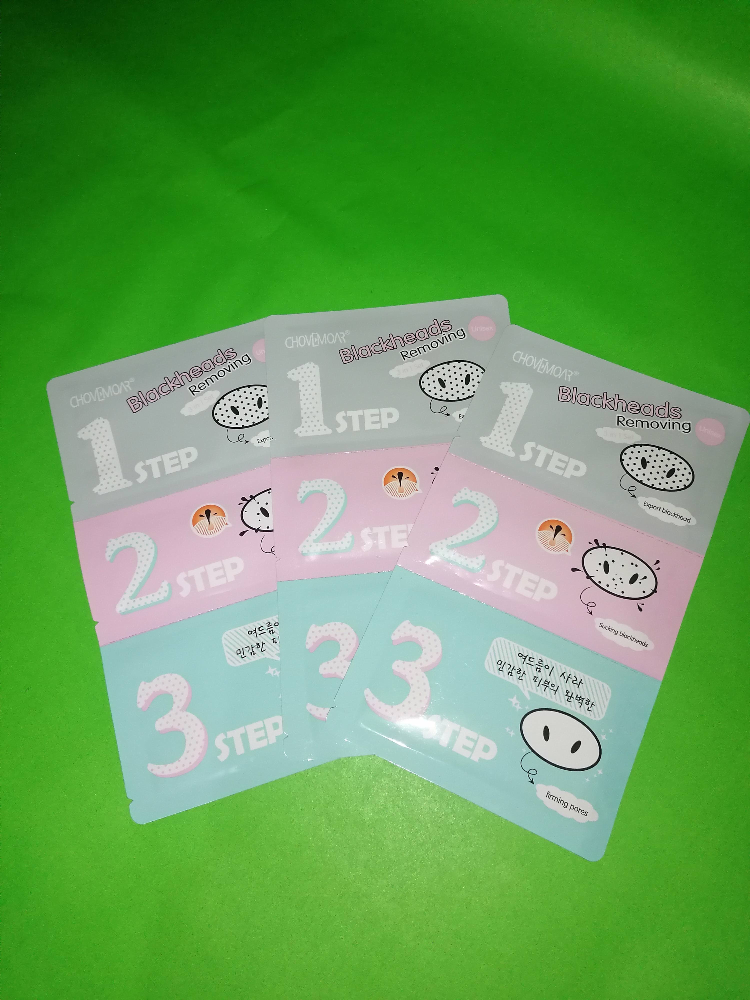
 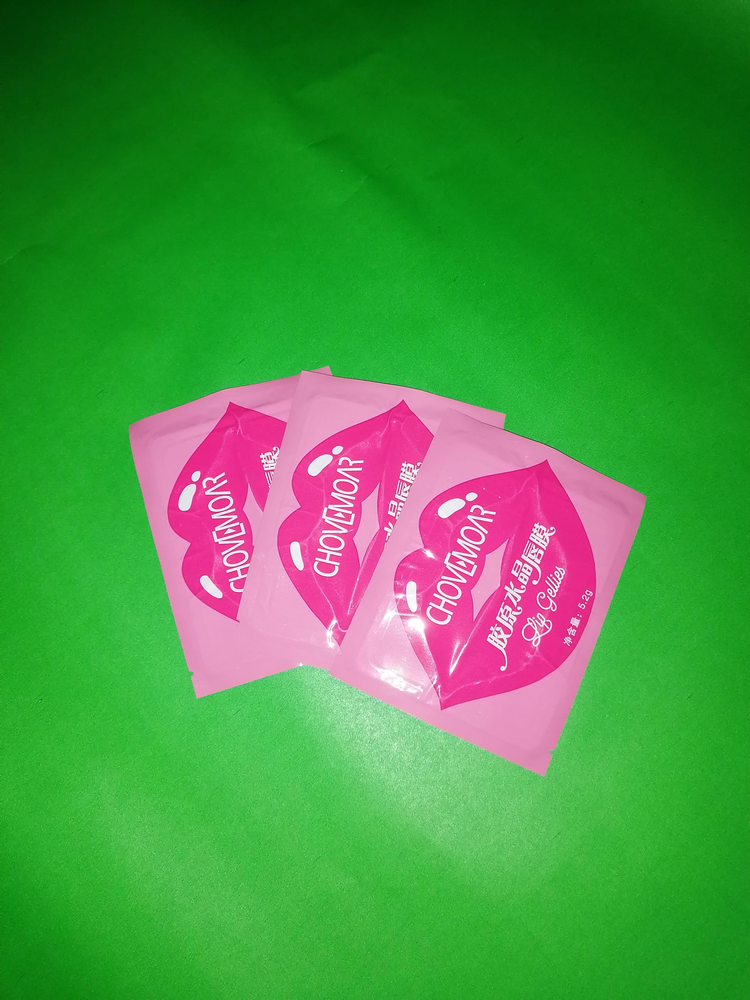
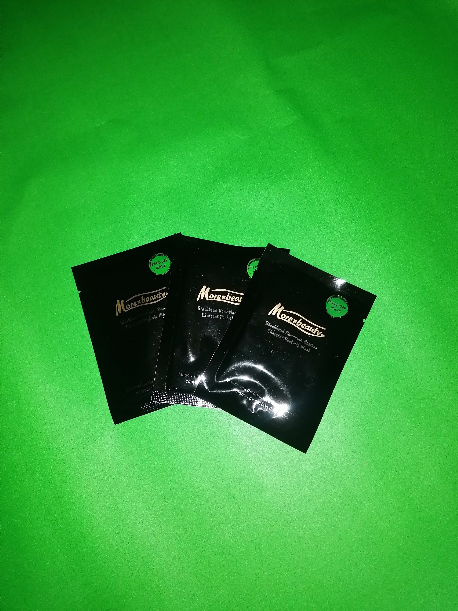
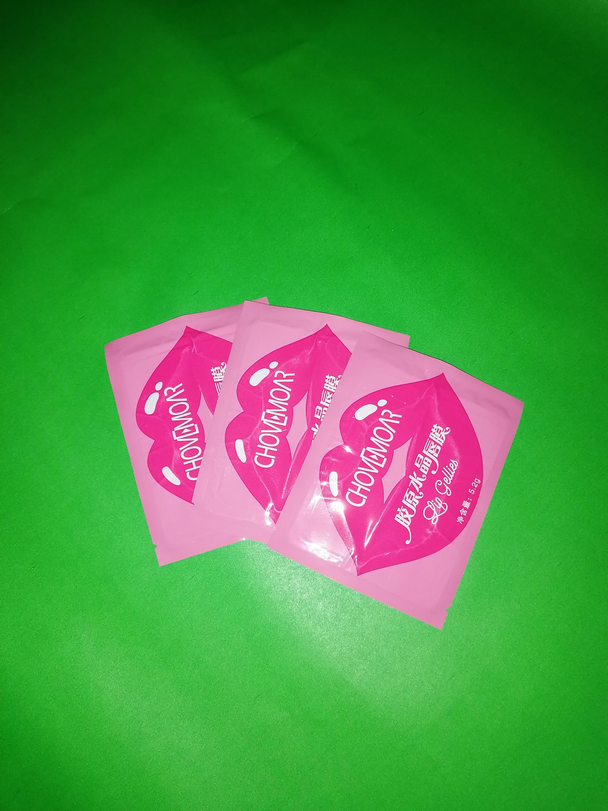
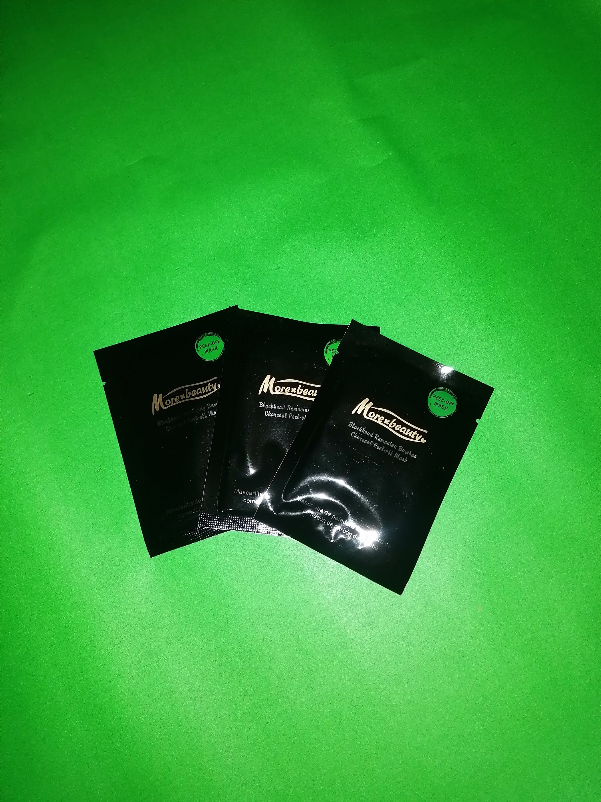
 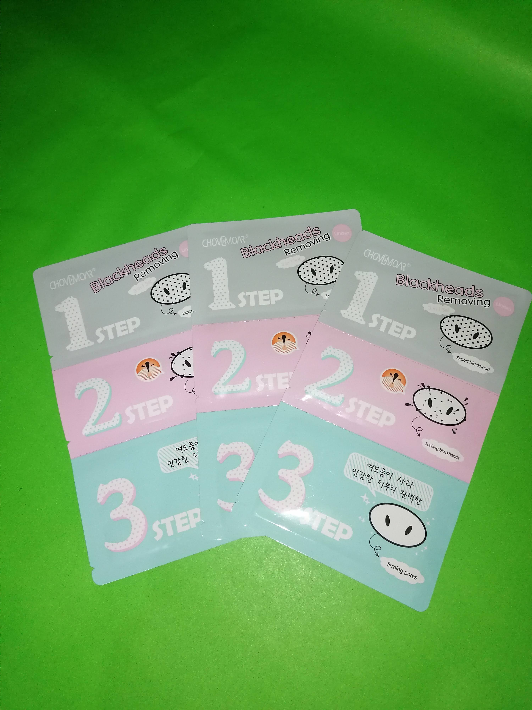
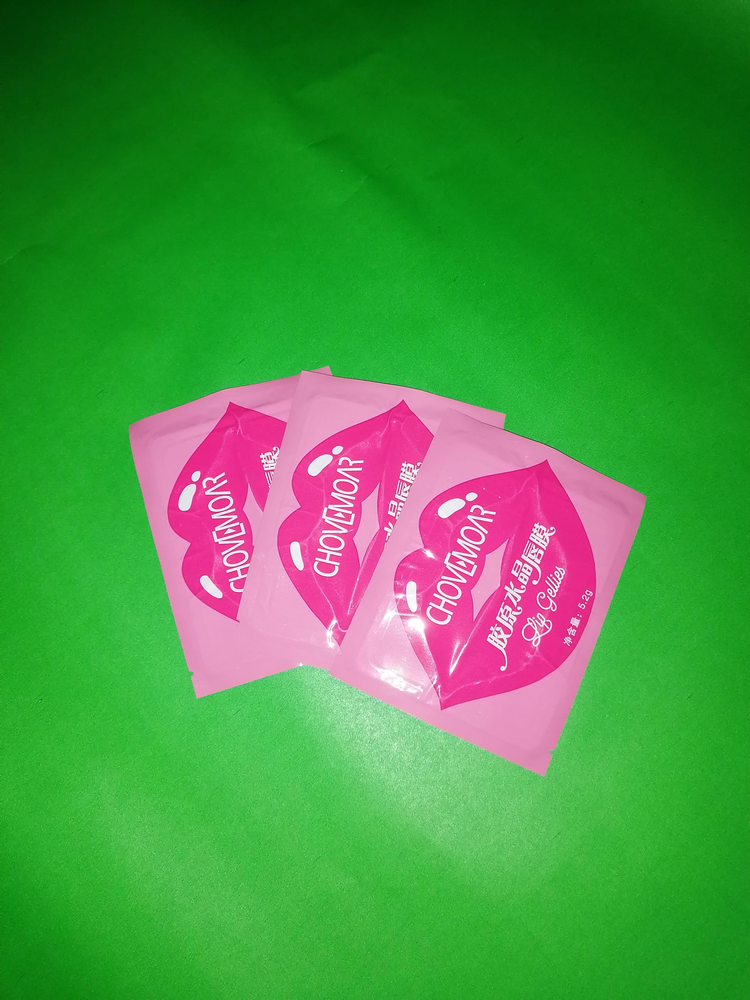
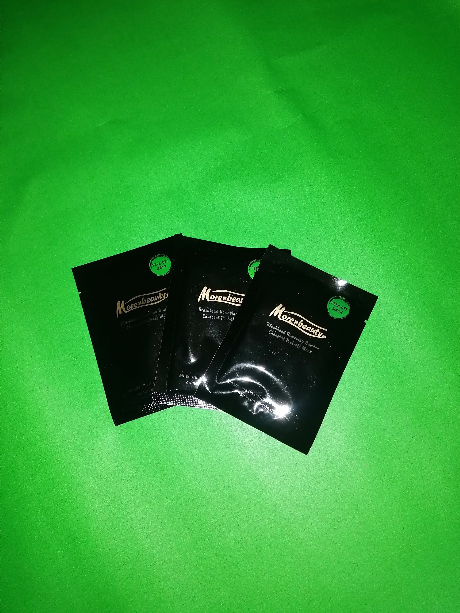
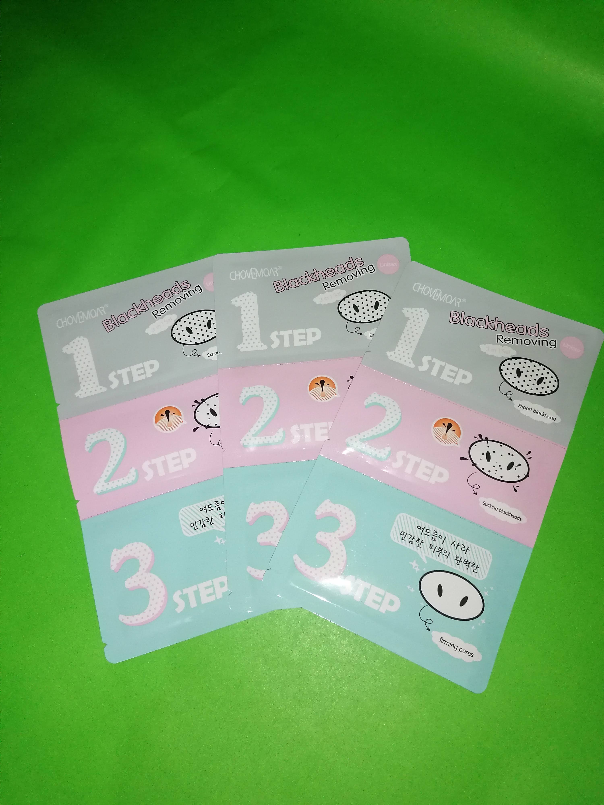
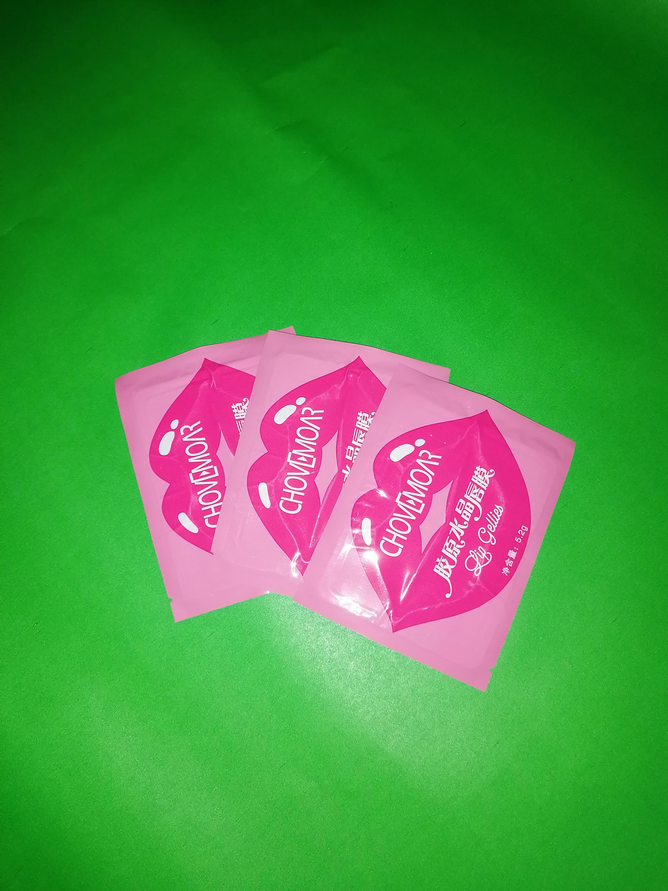
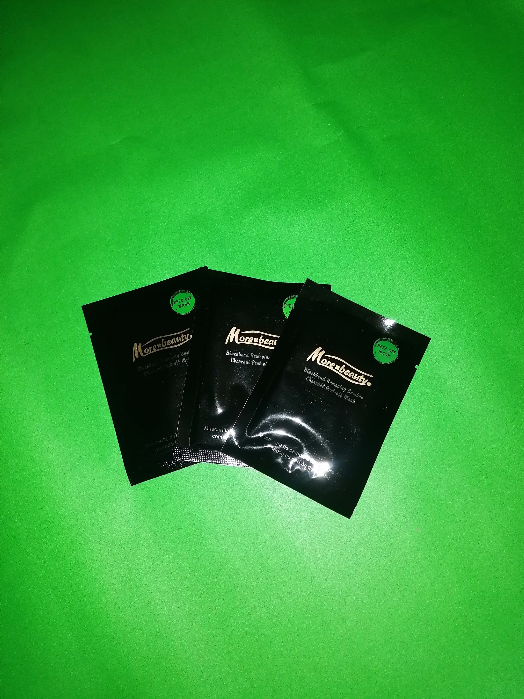
Legarre, D. (2021). ¿Cómo aplicar una mascarilla facial? Todo lo que debes saber. Blog armonía. https://armoniabio.com/blog/como-aplicar-una-mascarilla-facial/
Vásquez, F. (2019, 10 noviembre). ¿Cuáles son las ventajas de usar mascarillas faciales? clinica alemana. https://portal.alemana.cl/wps/wcm/connect/Internet/Home/blog-de-noticias/2019/cuales-son-las-ventajas-de-usar-mascarillas-faciales
Equipo Médico de Dermatología - Clínica Alemana. (s. f.). Clínica Alemana. https://www.clinicaalemana.cl/especialidades/dermatologia/equipo-medico
La importancia de cuidar la piel. (s. f.). https://www.fenistil.es/consejos-cuidado-piel/importancia-cuidar-piel.html#:~:text=La%20piel%20tiene%20un%20papel,estas%20funciones%20de%20forma%20correcta.